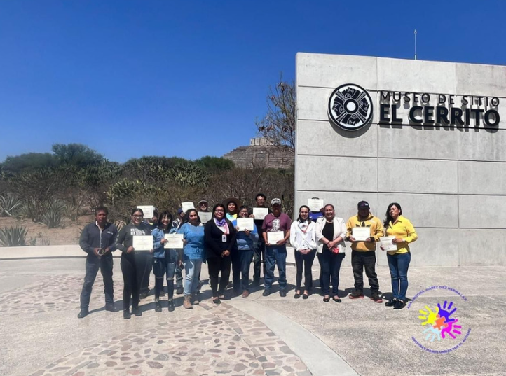

Nuestros Socios
Somos una Institución que subsiste de donativos, tanto de particulares como de organismos gubernamentales y privados. También nos beneficiamos del trabajo de estudiantes universitarios que dan su tiempo gratuitamente como practicantes y voluntarios.
